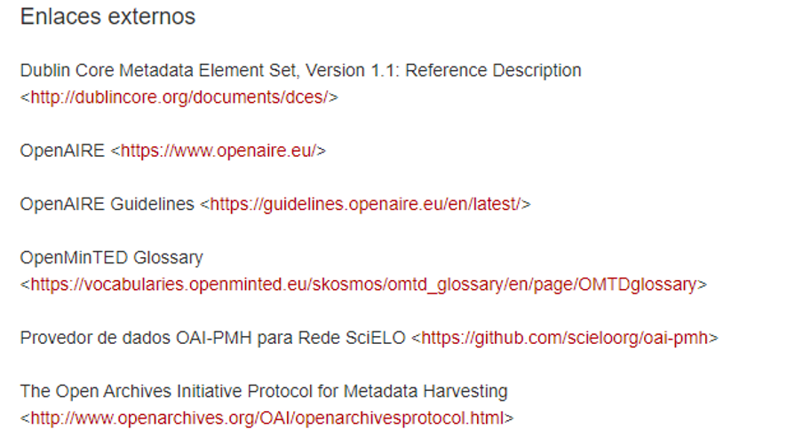

Enlaces
Los Enlaces es la que se encarga de comunicar distintos documentos en la web por medio de
Hipervinculos (links o enlaces).
En HTML los enlace se marcan por medio de la etiqueta <a></a> y su
atributo principal es href="".
El href="", es donde se escribe la ruta y este se puede clasificar en dos tipos.

File:Scielo enlaces externos.png. (s/f). Wikimedia.org. Recuperado el 19 de septiembre de
2021, de https://commons.wikimedia.org/wiki/File:Scielo_enlaces_externos.png
{kind=link}
- Rutas absolutas:
- Rutas Relativas
Estas definen la ubicación completa del archivo en la web y empienzan apartir del
https://nombredelsitio.dominio/archivo.dominio.
Un ejemplo claro es la pagina de la UNAD que sería como:
<a href="https://www.unad.edu.co/">Esta en la pagina de la UNAD</a>
Esta ruta es la que define la ubicación del archivo de destino que se encuentran en la misma
carpeta, un ejemplo sería asi:
<a href="temadentrodelacarpeta.html">Este es el otro tema en relación de esta
pagina</a>
Existen varios tipos de enlaces en los cuales se encuentran los:
- Enlaces internos entre archivos, los cuales son de tipo de ruta relativa.
- Enlaces externos, los cuales son de tipo de ruta absoluta en el que se direcciona el usuario a otra pagina externa direfente a la nuestra.
- Enlaces internos: anclas, en esta se direcciona dentro de la misma pagina, es decir, lleva a un punto especifico del documento.
- Enlaces para ampliar imagenes, es cuando se coloca una imagen pequeña en el cual se coloca el enlace que al darle clic la amplia.
- Enlace para descargas, segun la extención del archivo este nos puede llevar, ya sea a una archivo como por ejemplo: html, jpg, png, gif, svg, pdf, etc. O si es un comprimido le da la opción de descargarlo
- Enlaces a una dirección de correo electronico, se abre el programa de correo determinado, que pueden ser el Gmail o Hotmail.